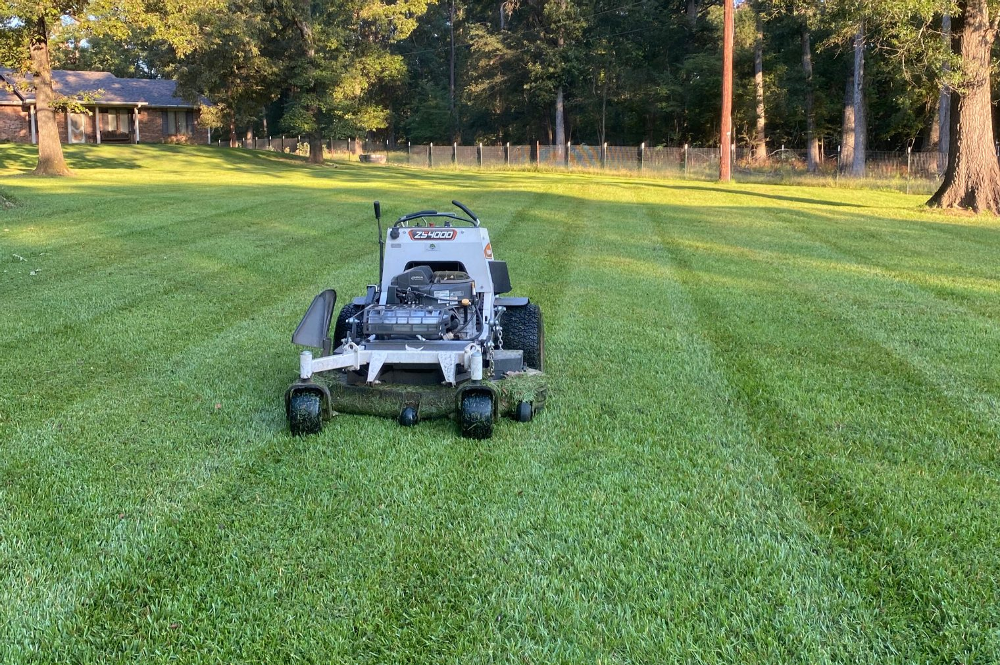
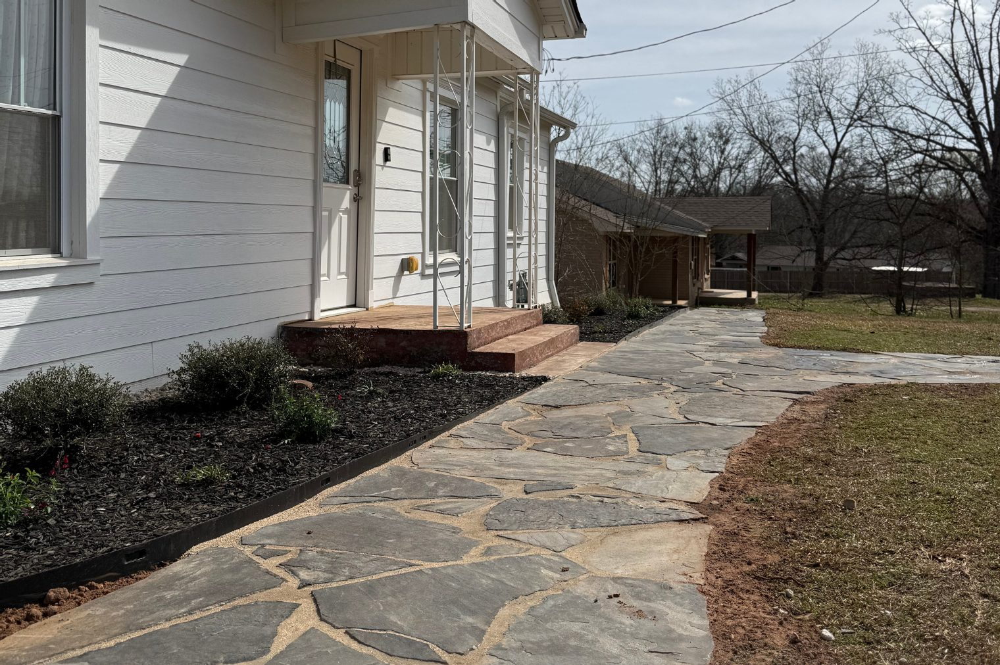
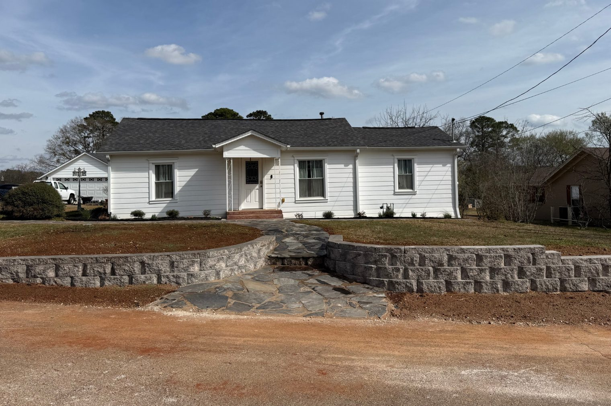
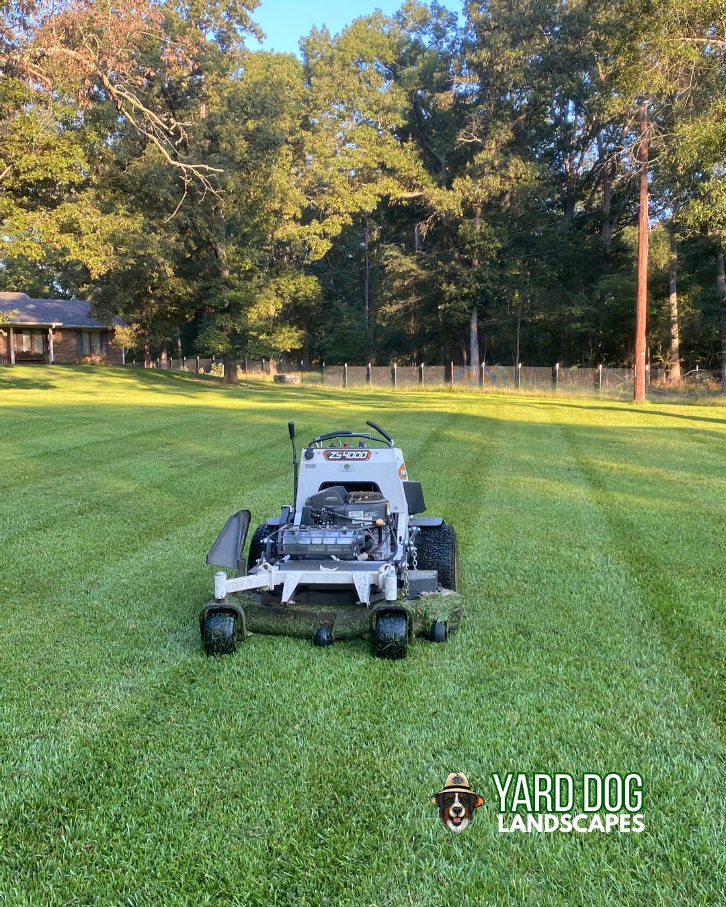
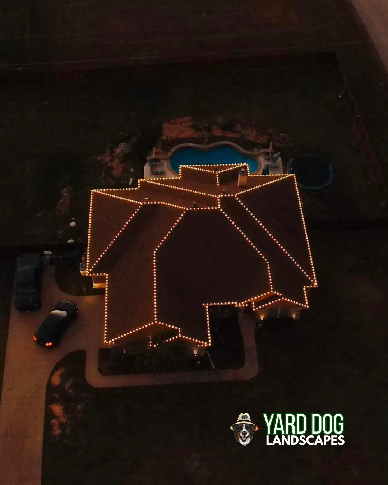
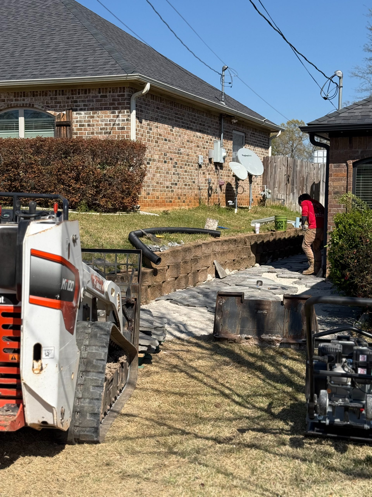
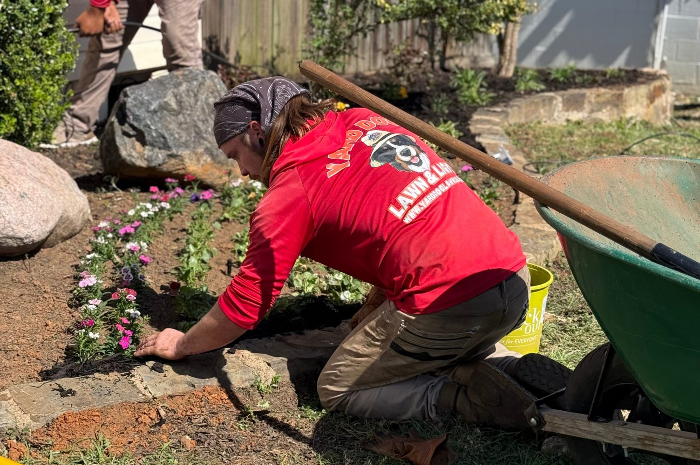
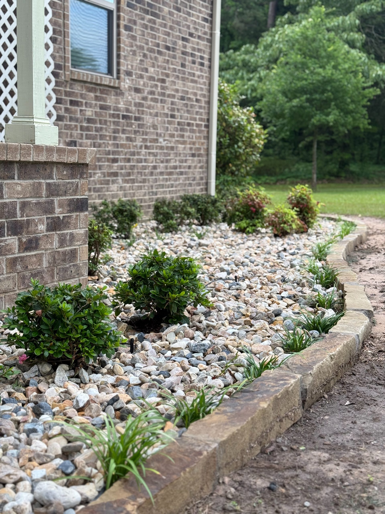

Lawn Care & Landscaping Services in Tyler, TX
Family-owned lawn care, landscaping, and outdoor services serving Tyler and Smith County since 2017.
Get a Free Quote in TylerLocal lawn & landscape pros for Tyler, TX.
Yard Dog Landscapes serves Tyler, TX and the surrounding Smith County area with a full lineup of outdoor services — weekly mowing, custom landscaping, leaf removal, fertilization programs, hardscape installs, and seasonal Christmas lights. We're a family-owned company that's been working East Texas yards since 2017, and Tyler is one of our regular service routes.
Whether you're looking for routine lawn care in Tyler, a full backyard transformation, or a quick one-time cleanup, you get the same crew, the same standards, and the same straight answers every time. We walk every property in person before we send an estimate, and we don't sub the work out.
Our services in Tyler, TX

Lawn Maintenance
Lawn Maintenance in Tyler, TX — local crew, written estimates, same-week scheduling.
View Lawn Maintenance in Tyler →
Landscaping
Landscaping in Tyler, TX — local crew, written estimates, same-week scheduling.
View Landscaping in Tyler →
Leaf Removal
Leaf Removal in Tyler, TX — local crew, written estimates, same-week scheduling.
View Leaf Removal in Tyler →
Lawn Fertilization
Lawn Fertilization in Tyler, TX — local crew, written estimates, same-week scheduling.
View Lawn Fertilization in Tyler →
Christmas Light Installation
Christmas Light Installation in Tyler, TX — local crew, written estimates, same-week scheduling.
View Christmas Light Installation in Tyler →
Hardscaping & Patios
Hardscaping & Patios in Tyler, TX — local crew, written estimates, same-week scheduling.
View Hardscaping & Patios in Tyler →
Tree & Shrub Care
Tree & Shrub Care in Tyler, TX — local crew, written estimates, same-week scheduling.
View Tree & Shrub Care in Tyler →
Drainage
Drainage in Tyler, TX — local crew, written estimates, same-week scheduling.
View Drainage in Tyler →Why Tyler homeowners choose us.
Local crew, local knowledge
Familiar with East Texas soil, grass, and climate — because we work it every day.
Free on-site quotes within 24 hours
We walk every property and send a written, itemized estimate fast.
Licensed, insured, family-owned
Same crew, same standards, every visit. Fully licensed and insured since 2017.